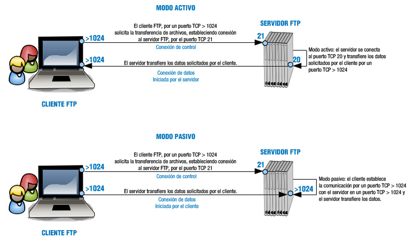

Modos de Conexión del Cliente FTP
Modo activo y pasivo
1.4. Modos de conexión del cliente
Ya se ha comentado que el servidor FTP a diferencia de otros servidores necesita dos puertos TCP para hacer posible la transferencia de archivos. Ahora bien, ¿son estos puertos siempre los mismos o no? ¿son independientes del tipo de cliente y servidor o no? Pues, básicamente depende de dos factores: del modo de conexión del cliente ftp y de la configuración del servidor ftp.
A priori, si no modificamos la configuración del servidor ftp esté otorgará siempre el puerto TCP 21 para el canal de conexión de control. Es el puerto del canal de transmisión de datos, el que varía, ¿cómo?, pues según el modo de conexión del cliente ftp, que puede ser activo o pasivo.
Cuando una aplicación cliente FTP inicia una conexión a un servidor FTP, abre el puerto 21 en el servidor. Se utiliza este puerto para arrojar todos los comandos al servidor. Cualquier petición de datos desde el servidor se devuelve al cliente a través de otro puerto TCP del servidor dependiendo del modo de conexión del cliente. Así:
- El modo activo es el método original utilizado por el protocolo FTP para la transferencia de datos a la aplicación cliente. Cuando el cliente FTP inicia una transferencia de datos, el servidor abre una conexión desde el puerto 20 en el servidor para la dirección IP y un puerto aleatorio sin privilegios (mayor que 1024) especificado por el cliente. Este arreglo implica que la máquina cliente debe poder aceptar conexiones en cualquier puerto superior al 1024. Con el crecimiento de las redes inseguras, tales como Internet, es muy común el uso de cortafuegos para proteger las máquinas cliente. Debido a que estos cortafuegos en el lado del cliente normalmente rechazan las conexiones entrantes desde servidores FTP en modo activo, se creó el modo pasivo.
- La aplicación FTP cliente es la que inicia el modo pasivo, de la misma forma que el modo activo. El cliente FTP indica que desea acceder a los datos en modo pasivo y el servidor proporciona la dirección IP y el puerto aleatorio, sin privilegios (mayor que 1024) en el servidor. Luego, el cliente se conecta al puerto en el servidor y descarga la información requerida.
A continuación puedes ver una imagen que muestra el funcionamiento de los dos modos: el activo y el pasivo.
En sistemas GNU/Linux es típico encontrar el archivo /etc/services que contiene una lista de puertos TCP/UDP relacionado con los servicios estándar que trabajan en los mismos. Ejecuta el comando cat /etc/services | grep ftp y encontrarás todos los puertos y servidores relacionados con la cadena ftp.